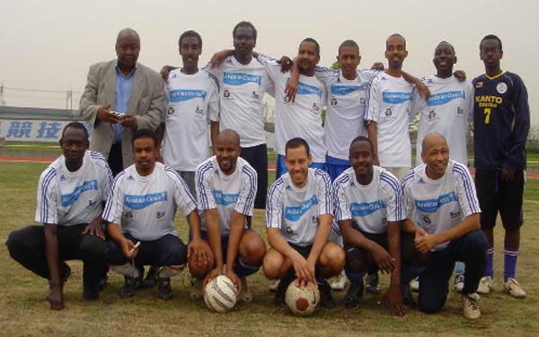
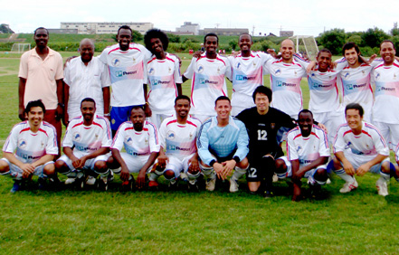

LIONS FC |

|
|
Back Row: Gaafar Ismael (manager), Ata Ahmed, Abderhman Ahmed, Aatif ElAmin, Ahmed Gaafar, Mohamed Khalafallah, Gaafar Soumi, Omar Birkiya |
Lions FC was founded by the Sudanese community in Tokyo. The team was founded in April 2005 and has grown with Sudanese players and friends from all around the world. In our short history, we have participated in different charity tournaments, won the UNICEF, Footy Japan Charity 6's Plate in 2007, and were runners-up in various tournaments including 7-aside. The excellent results we achieved so far encouraged us to move to the next level and join the TML 2 years, where we finished mid-table in our first 11-aside league try-out. Last year, we won Division 2 in style, with 10 consecutive wins in the start of the season, conceding the first goal after 9 games, and were unbeaten in all 11-aside matches for over 13 months. |
|

|
|
Back Row: AbdelRahman Ahmad (Player/coach), Gaafar Ismael (Manager), Zuhair Sule, AbuBakr 'Afro' Birkia, Omar Birkia, Mohammed Birkia, Hussein Shehata, Ahmed Gaafar, Ken Hersche, Tarik 'Elmasry' |
close |